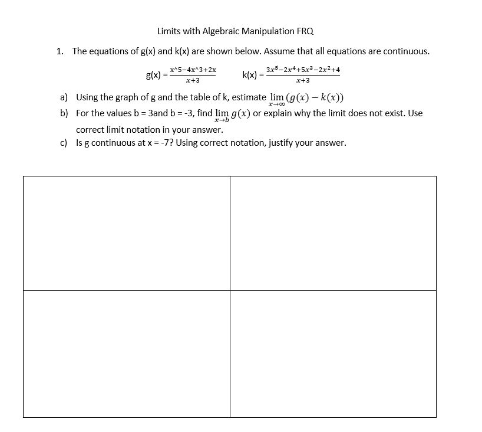

| Limits with Algebraic Manipulation | Chain Rule | Extreme Value Theorem | Right Riemann Sums | Antiderivatives | Volumes of solids (Washer Method) | Back to Home Page |
Made by: Kara Ho and Akshita Ramesh, AP Calculus Block 5, Mrs. Burns' Class
Welcome to your first mission: Solving Limits with Algebraic Manipulation! Here's a brief overview of what you'll need to do to complete your mission:
A limit is the value of a function as it approaches the index of a given value. The concept of limits is extremely important within calculus, due to the ability to derive continuity, differentiability, and integrals from limits.
The formula for limits from point x to point c can be written as:
 There are multiple ways to algebraically solve for limits.
There are multiple ways to algebraically solve for limits. 1. Solve the limit:
2. Solve the limit:

To see how the questions are solved, see the procedures below!
|
|
|
Lets try a multiple choice question on your own this time. You've got this! You can check your answer by clicking on the picture to the right.
Now lets try a free-response question! To check your answers, click the picture on the right
|  |